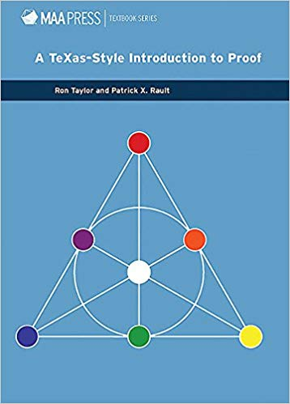

MATH 3200: Introduction to Higher Mathematics
See Piazza for current meeting times
MWF 12:20-1:10 PM, Boyd Graduate Studies Building, Room 322
406 Boyd Graduate Studies Building
Office hours:
Monday 1:15-2:30 PM
Tuesday 12:30-1:30 PM
Thursday 12:30-2:30 PM
Office hours with Daniel Hartman (TA):
Thursday 2-4PM, Boyd 434F
Current assignments/other course materials
- Final exam review PDF
- Exam #2 review PDF
- Induction pointers!PDF
- Assignment #4due 3/4PDF
- read Chapter 4 through p. 81. complete by 2/28
- read Chapter 4 through p. 78. complete by 2/24
- Quiz #3 study guidePDF
- read Chapter 4 through p. 70.
Additional resources for this material (OPTIONAL): Chapter 1 of Hammack, Chapter 5 of Sundstrom. complete by 2/17 - Assignment #3due 2/19PDF
- Exam 1 study guidePDF
- Finish reading Chapter 3.
complete by 2/5 - Quiz #2 study guidePDF
- read Chapter 3 through p. 61.
Additional resources for this material (OPTIONAL): Chapter 4 of Sundstrom. complete by 1/31 - Assignment #2due
1/291/31PDF - Finish reading Chapter 2.
complete by 1/24 - Quiz #1 study guidePDF
- Read Chapter pp. 35--46 in Chapter 2.
Additional resources for this material (OPTIONAL): Chapters 4--6 of Hammack, Chapter 3 of Sundstrom. complete by 1/15 - Assignment #1due 1/22PDF
- Finish reading Chapter 1.
Additional resources for this material (OPTIONAL): Chapter 2 of Hammack, §§2.1--2.2 of Sundstrom. complete by 1/15 - Read pp. 15--27.
You are not required to answer the Questions or prove the Statements that appear, but you will get more out of the reading if you think about them! Some of the Statements or Exercises may later be assigned in class or in your homework. complete by 1/13 - Watch your inbox for a class questionnaire.
Read §§0.2--0.3 in the assigned textbook; look also at §0.5, but don't worry yet about memorizing all of the symbols. These readings are not intended to introduce you to new material but to give you a flavor of what is to come.complete by 1/10
Course summary to date (reverse chronological order)
- 4/24 More practice with images and preimages. One-to-one and onto functions.
- 4/22 More on functions. Images and preimages.
- 4/20 Start of discussion of functions.
- 4/17 Modular arithmetic.
- 4/15 The classes under an equivalence relation. Arithmetic mod 7.
- 4/13 Relations, ctd, including equivalence relations.
- 4/10 More on relations: symmetric, transitive, reflexive.
- 4/8 Introduction to relations
- 4/6 Discussion of Midterm #2.
- 4/3 Midterm #2.
- 4/1 Exam review.
- 3/30 Q&A about the rest of the semester.
- 3/6 Power sets, ctd.
- 3/4 More on power sets.
- 2/28 More on product sets.
- 3/2 Element chasing proofs with product sets. Introduction to power sets.
- 2/28 More on product sets.
- 2/26 More "beyond element chasing". Definition of the product of sets.
- 2/24 Beyond element chasing.
- 2/21 More proofs involving sets "combined" via set operations. Venn diagrams.
- 2/19 Set equality and set operations.
- 2/17 Introduction to sets (Chapter 4).
- 2/14 Induction and strong induction with a general base case.
- 2/12 More strong induction: inequalities for Fibonacci numbers.
- 2/10 More on strong induction.
- 2/7 Midterm #1
- 2/5 More induction practice. Very brief (!) introduction to strong induction.
- 2/3 Quiz #2. Another induction practice problem.
- 1/31 What an induction proof looks like. The sum of the first $n$ natural numbers. Further practice.
- 1/29 A tiling puzzle. Statement of the Axiom of Mathematical Induction, and a first example (all natural numbers are even or odd).
- 1/27 Completion of Chapter 2: More practice with inequality proofs.
- 1/24 Quiz #1 administered. A classic proof: $\sqrt{2}$ is irrational.
- 1/22 More on parity proofs. Proofs involving inequalities.
- 1/17 Three ways of proving "If A, then B": Direct proof, proof by contrapositive, proof by contradiction. Parity and simple proofs involving parity.
- 1/15 Discussion of implications, quantifiers, and negating statements with quantifiers.
- 1/13 Compound statements. Logically equivalent statements. Proving logical equivalence with truth tables. Practice with implications.
- 1/10 What are statements? How can we recognize them. Negations and connectives ("and", "or", and "implies"), and how to determine their truth values.
- 1/8Discussion of syllabus. Some "food for thought".
Course content summary
Given that this class is titled "Introduction to Higher Mathematics.", it makes sense for us to begin by discussing what "higher" mathematics is, and how it differs from the more terrestrial flavor of mathematics you are likely accustomed to.
A useful way of conceptualizing higher mathematics can be seen in a common name people have for courses like MATH 3200. MATH 3200 is what many people would call a "transition course". The transition is away from a focus on computation, and away from an emphasis on correct answers as the end goal. The transition is towards a focus on logical reasoning, and towards an emphasis on deep conceptual understanding.
Why is there such an emphasis placed on logical reasoning? The answer is: Communication! If two groups of people are given the same mathematical problem, the group claiming a solution needs to be able to convince the others that they indeed have found a solution.
Depending on the problem, convincing someone you have a solution can be easy or difficult. As an example of the former, suppose you are asked to prove that 2020 can be written as a sum of four squares of integers. If you know that $2020 = 2^2 + 4^2 + 20^2 + 40^2$, you can convince someone else of this fact just by showing them that equation. But what if the problem is as follows?
PROBLEM: Show that every positive integer is a sum of four squares.
How could you convince someone that you solved that? It would not be enough to communicate representations of integers up to $100$, $1000$, or $10^{100}$, as there are infinitely many numbers beyond any of these limits. What is needed here is a logical argument, starting from points both parties can agree upon, and which proceeds in a manner that both parties endorse. This is what is meant by mathematical proof. The goal of this class is to introduce you to the art and science of writing mathematical proofs.
(The above PROBLEM describes a famous result from Number Theory, which is MATH 4400.)
Course structure
This class is, unapologetically, structured to emphasize active learning. Active learning is the crazy idea is that you learn mathematics best by doing mathematics, not by hearing someone else talk about it. Just as you hone your athletic abilities not by sitting on the bench but by getting out in the field and running after the sportsball, you hone your mathletic abilities not by listening to me lecture but by solving math problems.
What does this mean in practice? If you haven't taken other classes that emphasize active learning, you should expect a different kind of classroom experience. Rather than spending 50 minutes on lecture each time we meet, a typical day will start with a brief mini-lecture, summarizing the readings --- readings you are expected to have completed outside of class. (You should expect to have assigned reading after every lecture.) The rest of our time together will usually be devoted to problem solving with your classmates, in groups --- with occasional assistance from myself, when necessary. You can also expect that I will occasionally call on you to present solutions, and that your solutions will receive oral feedback both from myself and from your classmates.
This way of learning mathematics may require you to step out of your comfort zone. This is a big ask. In return, I promise to do my best to provide you with a supportive environment. It's OK to find something difficult or confusing. That's part of learning mathematics, and the struggle is present at every level, perhaps even more so the further you advance. (I myself am confused almost all of the time.) Please help me out by doing your best to be show support to your classmates. Aim your comments to be thoughtful, respectful, and constructive.
Finally, I would like to encourage you to use me as a resource, and to stop by my office hours when you have questions. Those might be questions about the reading, questions about class activities, or questions about a past or present homework assignment.
Textbook (REQUIRED)
-

A TeXas-Style Introduction to Proof
Ron Taylor and Patrick X. Rault
We will aim to cover Chapters 1--5, covering symbolic logic, proof methods, mathematical induction, set theory, and functions and relations.
It is always a good idea when learning a subject to consult multiple sources. Different authors have different styles, some of which will sing to your soul more or less than others. For the material we will cover two free online options are Book of Proof by Hammack and Mathematical Reasoning: Writing and Proof by Sundstrom. (These are optional additional resources; you are not expected or required to look at them.)
N.B. The book by Taylor and Rault has two goals. The first, which is the one we care about, is to train you to write mathematical proofs. The second is to provide a basic introduction to a computer language called TeX, which was designed to allow people to easily type up mathematical proofs. We will not do anything with TeX this term, and so we will skip over those sections of the book. With that said, if you go on in STEM, you will find that TeX/LaTeX is incredibly useful for writing papers.
Exam dates
There are two in-class midterm exams as well as a final exam.
- Midterm #1: Friday, Feb. 7
- Midterm #2: Friday, April 3
- Final exam: Friday, May 1, 12:00 - 3:00 PM (location TBA)
No make-up exams will be given. The final exam is cumulative.
Attendance/ Homework /Exam Policies
Your grade is made up of the following weighted components:
- Quizzes: total of 10%
- Each midterm: 20% (total of 40%)
- Homework: 20%
- Final exam: 30%
You are expected to participate in class. In particular, attendance in this course is required. More than four unexcused absences may result in you being withdrawn from the course. Keep me posted whenever you have a conflict that requires you to miss class and this should not be an issue.
All exams and quizzes are in-class, closed book, and closed notes.
Homework will be collected in class regularly (every week or two). Late homework will not be accepted. If you have a need to turn in HW early, that can be arranged. HW problems are graded out of 10 points. You will be given an opportunity to correct your assignments and recover up to 9 of the 10 points. For this, you must turn in your revisions to our TA within 1 week of the date the assignment is returned to you. This opportunity is only open to students who turned in a first version of the problems on time.
On homework, collaboration is allowed and in fact is very much encouraged. Mathematics wouldn't be nearly as much fun if we couldn't talk about it with other people! However, copying (from a textbook or another student) and web searches are not allowed, and you must write your own final solutions independently. Keep in mind that by entering UGA, you have already agreed to abide by the UGA Honor code described in detail at https://honesty.uga.edu/Academic-Honesty-Policy/Student-Honor-Code/.
In practice, what this means that you may discuss homework problems and their solutions with your classmates (and with me at office hours!), but you may not turn in a solution unless you understand it yourself. A reasonable rule of thumb is that you should be able to explain your solutions verbally to me (in all their gory detail) if requested to do so.
Special accommodations
Students with disabilities who may require special accommodations should talk to me as soon as possible. Appropriate documentation concerning disabilities may be required. For further information, please visit the Disabilities Resource Center page.
Disclaimer
The course syllabus is a general plan for the course; deviations announced to the class by the instructor may be necessary.